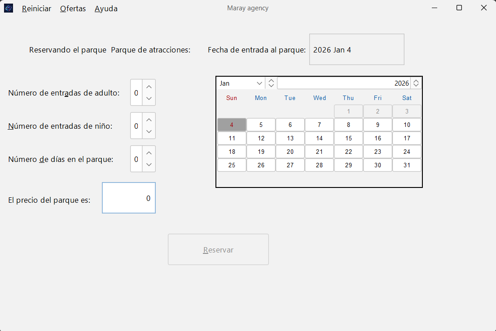

Una vez seleccionado un parque o alojamiento, el botón "Reservar" le llevará al panel de configuración de la reserva. Aquí deberá introducir los detalles específicos de su viaje antes de formalizarla.

El sistema calculará automáticamente el importe total. Cuando haya completado los datos para todos los servicios deseados, pulse "Formalizar Reserva" para ir al paso final de confirmación e introducción de datos personales.